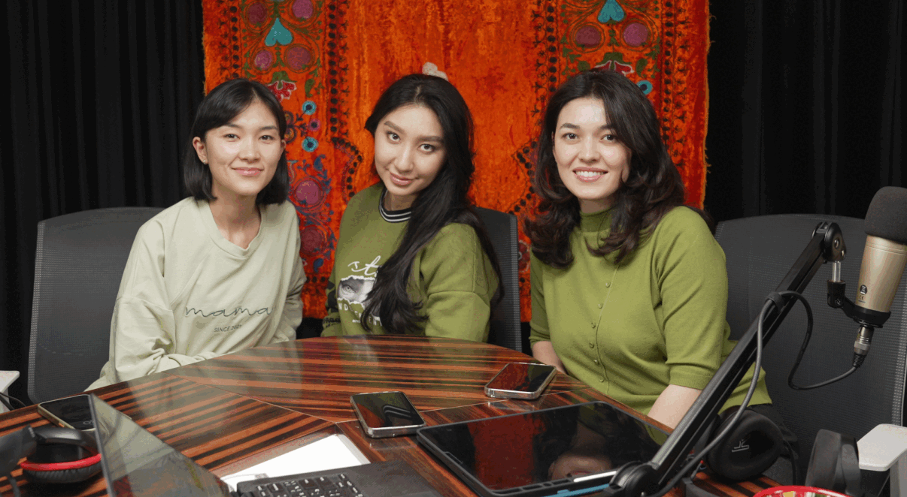

THIS IS A BETA VERSION
FULL WEBSITE IS IN COLLECTIVE CONSTRUCTION
Qizlar is a self-organised grassroots collective of interdependent contemporary cultural and art practitioners and activists from Uzbekistan, founded in 2022
The National Pavilion of Uzbekistan
at the 60th Venice Biennale of Contemporary Art
2024
SUPPORTED BY
The Art and Culture Development Foundation of the Republic of
Uzbekistan,
CCA Tashkent
immersive performance
in collaboration with generalkunst
2024–2025
SUPPORTED BY
Art Station Samarkand, 139 Documentary Center, Arts Council Korea
annual festival on March 8th
with experts, creators, NGOs, and grassroots initiatives
2023–...
SUPPORTED BY
Goethe Institut, Tashkent Film School, etc.
free educational online platform
with Central Asian creators
2024–...
SUPPORTED BY
Women Win: Free STEM
podcast about motherhood and parenting in Uzbek
2023-...
installation
at ‘You are Here’ Exhibition
2024-2025
SUPPORTED BY
Fondazione Elpis